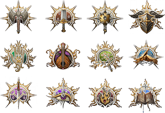

Baldur's Gate 3
동료와 배신, 희생과 생존, 그리고 절대적인 힘의 유혹에 얽힌 이야기
속에서, 파티를 모아 잊혀진 영역으로 돌아가세요.
당신의 뇌에 심어진 마인드 플레이어 기생충에서 비롯된 신비한 능력들
이 당신 안에서 깨어납니다. 저항하고 어둠을 스스로에게 맞서세요.
아니면 타락을 받아들여 궁극의 악이 되세요.
Story
여러분은 납치되고 감염됐으며, 갈 길을 잃고 서서히 괴물로 변하고 있
습니다. 하지만 내면의 타락이 깊어질수록, 여러분의 힘 또한 강력해지
고 있죠.
그 힘은 생존에는 도움이 될지 모르나, 그에 따른 대가를 피해 갈 순 없
습니다. 그리고 다른 어떠한 능력보다도 일행과 쌓는 신뢰가 여러분에게
크나큰 도움이 돼줄 것입니다.
악마와 신, 그리고 다른 차원에서 온 사악한 세력 간의 싸움에 휘말리게
된 여러분은 일행과 함께 포가튼 렐름의 운명을 결정하게 됩니다.
About

D&D 플레이어즈 핸드북에서 등장한 12개의 직업과 11개의 종족 중에
서 선택해 여러분만의 캐릭터를 만들거나, 손수 제작된 배경을 지닌
오리진 영웅으로 플레이하세요.
아니면 독특한 메커니즘과 독자적인 이야기를 갖췄으며 하나부터 열까
지 세세하게 설정할 수 있는 오리진 영웅 '어두운 충동'이 되어 내면
의 타락에 맞서 보세요.
어떤 캐릭터를 선택하든, 포가튼 렐름과 그 너머까지 모험과 보물, 전투와 로맨스를 즐길 수 있습니다. 그러니, 일행을 모으세요. 최대 4명의 친구들과 일행을 구성해 모험을 온라인으로 즐기셔도 좋습니다.
Characters
아스타리온
마인드 플레이어에게 감염되기 전
까지 그는 수백 년 동안 가학적인
주인 밑에 종속되어 밤을 활보하던
뱀파이어 스폰이었습니다.
하지만 감염이 그를 낮에도 활보할
수 있게 하고 그의 주인과의 연결
도 끊은 이상, 그의 앞을 막아서는
옛 주인은 그가 역사상 가장 강대
한 뱀파이어가 되는 것에
방해만이 될 뿐입니다.
게일
마법 영재인 게일은 여신을 사랑하
여 그녀를 위해 필멸자가 감히
흉내낼 수 없는 주문들을 시도하던
중 네서릴의 금지된 마법에 접촉하
여 저주를 받았습니다.
게일은 이 저주가 자신을 세상의
파괴자로 탈바꿈시키기 전에
이 타락을 치료하고 다시 한번
여신의 총애를 얻기 위해 노력 중
입니다.
레이젤
레이젤은 같은 마인드 플레이어
사냥꾼 중에서도 맹렬한 축에 속하
는 기스양키 전사입니다.
파괴하기로 맹세했던 바로 그 괴물
로 변해가는 상황에 처한 그녀는
종족에게 돌아가기 위해 자신을
증명해 보이길 원하고 있습니다.
그들이 먼저 자신을 처형하지만
않는다면 말입니다.
섀도하트
섀도하트는 밤의 여신이 부여한
신성한 임무에서 유일하게 살아남은
샤의 충직한 사제입니다.
머릿속에서 꿈틀거리는 일리시드
올챙이가 그녀를 위협하고 있지만,
오직 그녀 혼자 이 강대한 힘을
지닌 성물을 발더스 게이트로
이송해야 합니다.
윌
귀족의 자제로 태어난
윌은 '변경의 검'이라는
영웅적인 이름을 날렸습니다.
하지만 그는 사실 전설적인 인물이
될 힘을 얻고자 악마와 거래한 것
이었고,윌은 그 악마가 자신의
영혼을 모두 삼켜버리기 전에 어떻
게 해서든 계약을 끊을 방법을 모색
고 있습니다.
카를라크
카를라크는 10년 간 봉사한 지옥
에서 그녀 등에 걸친 도끼와 함께
탈출했습니다.
그리고 그녀의 심장이 있었던 곳엔,
지옥불 엔진이 격정적으로
불타오르고 있습니다.
다크어지
당신은 피로 포장된 길 외에는
아무것도 기억하지 못합니다.
상상조차 할 수 없는 잔인함이
당신의 내면에서 속삭입니다.
그 속삭임에서 벗어날 수 있을까요?
아니면 벗어나기를 원하기는 할까요?
Buy Now
Social Media